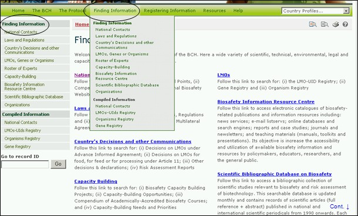
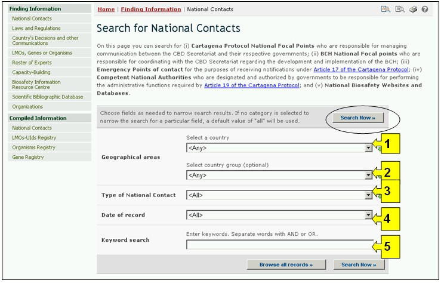
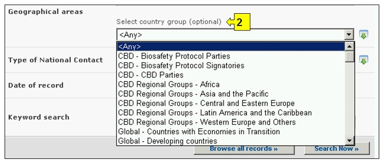
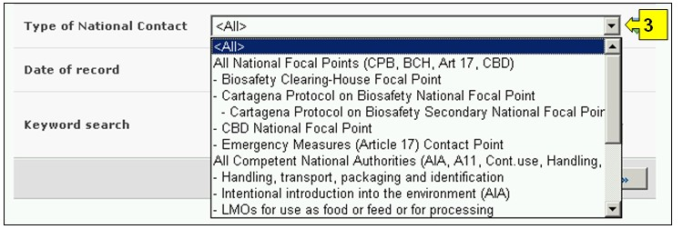
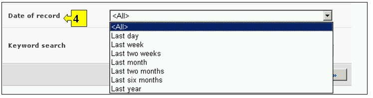

URL: http://bch.cbd.int/database/contacts/
El Artículo 19 del Protocolo presenta como requerimiento a los países designar Autoridades Nacionales Competentes y Puntos Focales Nacionales. Esta información así como la de sitios Web y Bases de Datos Nacionales se puede obtener desde la página Búsqueda de Contactos Nacionales.
Una interfase de búsqueda de información acerca de Contactos Nacionales puede ser obtenida mediante el vínculo en el menú desplegable de Búsqueda de Información en la barra de navegación, o mediante el vínculo en el menú localizado en la barra lateral izquierda de la página Búsqueda de Información o en el vínculo en el texto Contactos Nacionales en la misma página.

Figura 3
La base de datos de Contactos Nacionales permite al usuario buscar lo siguiente:
-
Puntos Focales Nacionales del Protocolo de Cartagena sobre Bioseguridad (PFN-PCB), que son los que se encargan de gestionar la comunicación entre la Secretaría del CDB y los gobiernos respectivos;
-
Puntos Focales Nacionales del Centro de Intercambio de Información sobre Seguridad de la Biotecnología (PFN-CIISB), son los que se encargan de coordinar con la Secretaría del CDB lo relativo al desarrollo e implementación del CIISB;
-
Puntos de Contacto para Medidas de Emergencia para recibir notificaciones bajo el Artículo 17 del Protocolo de Cartagena;
-
Autoridades Nacionales Competentes, que son designadas y autorizadas por los gobiernos para responsabilizarse de realizar las funciones administrativas requeridas por el Artículo 19 del Protocolo; y
-
Los sitios web Nacionales de Bioseguridad y las Bases de Datos

Figura 4

Figura 5
En la página Búsqueda de Contactos Nacionales hay cinco cuadros para referenciar los criterios de búsqueda en la base de datos. Cada uno de estos tiene un menú desplegable en el que se puede seleccionar el criterio de búsqueda. La búsqueda por defecto es el primer elemento que aparece en la lista desplegada. En la parte derecha de cada cuadro, un botón le permite al usuario activar selecciones múltiples. Una vez se está en el modo de selección múltiple, es posible agregar más criterios haciendo clic en el criterio y presionando al mismo tiempo la tecla Ctrl (Control).
Cuadro 1 [Seleccione un país] Un menú desplegable presenta una lista de todos los países, de tal modo que los usuarios pueden seleccionar uno o más países en cada búsqueda

Figura 6
Cuadro 2 [Seleccione un grupo de países] Un menú desplegable presenta una lista que contiene las mayores agrupaciones geográficas y políticas de países y permite seleccionar solamente aquellos registros que han sido enviados por los miembros del grupo o grupos seleccionados.

Figura 7
Cuadro 3 [Tipo de Contacto Nacional] presenta una lista de los tipos de Contactos Nacionales disponibles en la base de datos y permite al usuario definir su búsqueda según las responsabilidades específicas de cada contacto o grupo de contactos nacionales.

Figura 8
Cuadro 4 [Fecha del registro] permite al usuario que limite la búsqueda de acuerdo con la fecha en la que el registro ha sido ingresado al CIISB. El menú desplegable proporciona un número de opciones para limitar la búsqueda solamente a aquellos registros que han sido enviados dentro del período de tiempo seleccionado (Ej: ‘último día’, ‘último mes’, ‘último año’, etc.).

Figura 9
Cuadro 5 [Búsqueda por palabras clave] brinda la oportunidad de utilizar palabras clave para restringir la búsqueda. El usuario puede utilizar la sintaxis estándar de palabras clave (combinación de los operadores Y/O) para buscar con múltiples palabras, o partes de palabras (Ej. “Importación O Exportación”). La búsqueda con palabras clave permite obtener solamente registros que contengan el texto exacto y no sinónimos que no hayan sido insertados (Ej: Una búsqueda con la palabra clave “Maíz” producirá una lista de registros que contienen la palabra “Maíz” pero no los registros que contengan “Zea mays”).

Figura 10
La página de búsqueda ofrece tres botones para obtener la lista de registros. El botón Busque Ahora (Tanto en la parte superior como inferior de la interfase de búsqueda) permite al usuario activar una búsqueda basada en los criterios seleccionados en los cuadros de la tabla de búsqueda. Los resultados de búsqueda son ordenados alfabéticamente, por defecto, de acuerdo con el nombre de país. El botón Busque todos los registros (En la parte inferior de la interfase de búsqueda) permite al usuario obtener una lista de todos los registros en esta base de datos.

Figura 11
Las páginas de Resultados de Búsqueda poseen una ventana de ordenamiento arriba de la lista de los registros encontrados. Esta puede utilizarse para ordenar los registros de acuerdo con criterios específicos para esa categoría de información. Observe que los resultados cambiarán cuando el usuario ajusta los criterios de búsqueda.

Figura 12
Ejemplo 1: Un usuario desea identificar los Puntos Focales de Medidas de Emergencia en Paraguay para asuntos relacionados con el movimientos transfronterizos no intencionales de OVM o medidas de emergencia. Seleccionando Paraguay del menú desplegable Seleccionar País y ‘Puntos de Contacto para Medidas de Emergencia (Artículo 17)’ de la lista del cuadro Tipo de Contacto Nacional (Type of National Contact), el usuario restringe la búsqueda a los registros que más parecieran proporcionar la información requerida.
Figura 13
Cuando se hace clic en el botón Busque Ahora una página despliega cuáles son los Contactos Nacionales en Paraguay que tienen alguna responsabilidad en cuanto a las medidas de emergencia. Seleccionando el título de la institución permite al usuario desplegar el registro que contiene los detalles del contacto nacional.

Figura 14
Ejemplo 2: Un usuario desea identificar todos los Puntos Focales del CIISB de los países que son miembros de la Asociación de Naciones del Sud Este Asiático – ASEAN-. El usuario selecciona Asia-Pacifico - Asociación de Naciones del Sud Este Asiático - (Asia-Pacific - Association of Southeast Asian Nations) en el cuadro Seleccione el Grupo de País (Select Country Group) y Punto Focal del CIISB (Biosafety Clearing-House Focal Point) en el cuadro Tipo de Contactos Nacionales (Types of National Contacts). Seleccionando el botón se despliega una serie de resultados mostrando los Puntos Focales del CIISB en los países que son miembros del ASEAN.

Figura 15

Figura 16